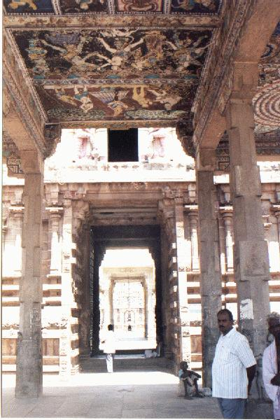
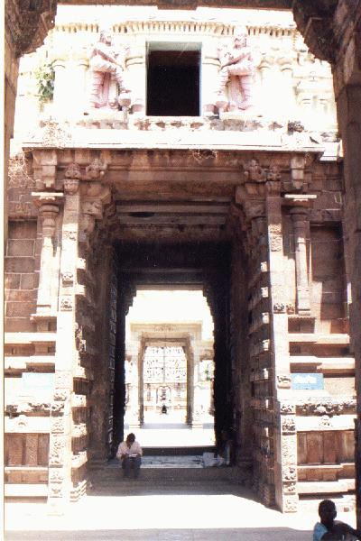
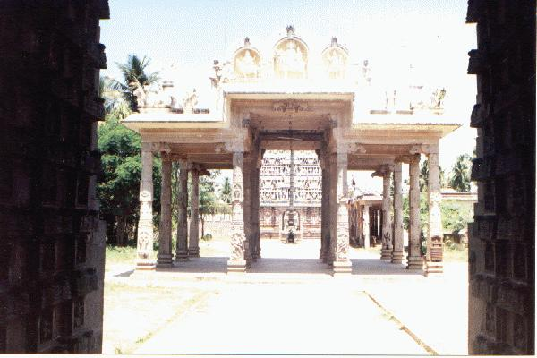
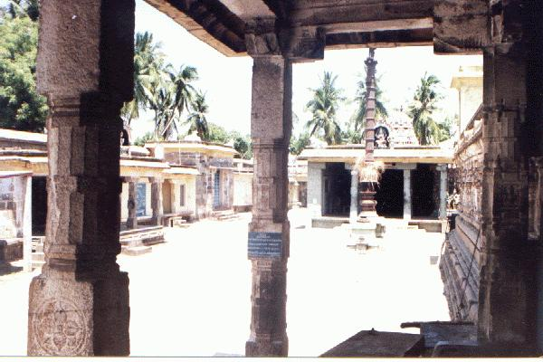
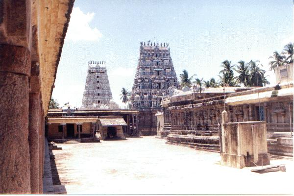
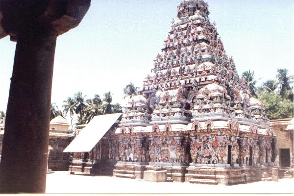

atiki vīraṭṭam [tiru]
- Identifier: NA07
- Modern Name (NIC):
- Modern Name (M.I.): tiruvatiki
- Modern Name (Govt Press): tiruvati
- Modern Name: Tiruvatiki
- Other name: keṭila vīraṭṭam [[see 6:49 (2)]]
- Modern District & Taluk: kaṭalūr DT (paṇruṭṭi TK)
- Old administrative location: South Arcot DT (Cuddalore TK)
- Alternate designation: tiru atiki vīraṭṭāṉam
- Nearby town: Paṇṇuruṭṭi
- Railway station: Paṇṇuruṭṭi (SE: 1.5 km)
- Longit. 79 deg. 34'; Latit. 11 deg. 46' [NA07]
- C.D.Maclean-3: entry: TIR, p. 900, col. 2,
[Trivetty [tiruvati], lat. 11deg. 46', long. 79 deg. 37';
place of pilgrimage, [...], on the Guddilam]
- Location: according to PK: Naṭu Nāṭu (NA07)
- Name inside hymns:
- Name inside PK: atiki
- Rank inside third volume of PIFI: 5
- Rank inside Civastala Mañcari: 5
- Rank on PY576 map: 61
- Total number of patikam-s: 18
- Campantar: 1 patikam
- Appar: 16 patikam
- Cuntarar: 1 patikam
15 pictures taken on 1998 August 4th (Tuesday, 11 a.m.)











- Patikam 1_46
- Patikam 4_1
- Patikam 4_2
- Patikam 4_10
- Patikam 4_24
- Patikam 4_25
- Patikam 4_26
- Patikam 4_27
- Patikam 4_28
- Patikam 4_104
- Patikam 5_53
- Patikam 5_54
- Patikam 6_3
- Patikam 6_4
- Patikam 6_5
- Patikam 6_6
- Patikam 6_7
- Patikam 7_38